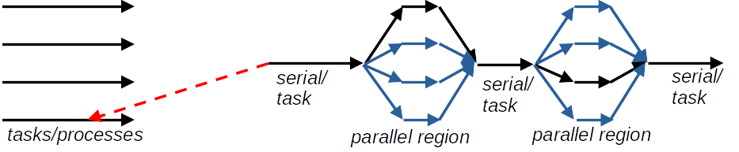

ESiWACE3-WarmWorld Summer School on HPC for Climate and Weather Applications
Two lectures + two exercise sessions; in Fortran
Shared memory computing using multithread parallellization with OpenMP
task construct
Create by one thread (using e.g. master or single) or several threads
omp taskwaitTasks can create more tasks, e.g. in recursive functions
Example: will the outputs differ with/without omp single?
omp single only a single thread creates the 4 tasksomp single and with OMP_NUM_THREADS=4?omp single and with OMP_NUM_THREADS=4? 
Possible to improve scalability
Hybrid model readily used in most modern codes
Need to find the right balance between the number of processes per node and the number of threads per process
| Pros | Cons |
|---|---|
| Makes sense for modern platforms | Increase the degrees of freedom for optimal performance |
| Take advantage of shared memory access vs. explicit messaging | Increased complexity of the code |
| Potential performance gains | Implementation in large applications requires good planning |
required, provided, err)requiredprovidedrequired (and supported) will be one of pre-defined integer constants describing thread support level: MPI_THREAD_SINGLE < MPI_THREAD_FUNNELED < MPI_THREAD_SERIALIZED < MPI_THREAD_MULTIPLE| MPI_THREAD_SINGLE | One thread per process |
| MPI_THREAD_FUNNELED | Multithreading, but MPI only on main thread |
| MPI_THREAD_SERIALIZED | MPI from all threads, one at a time |
| MPI_THREAD_MULTIPLE | No restrictions |
-qopenmp a thread safe version of the MPI library is automatically usedMPICH_MAX_THREAD_SAFETY environment variable to single, funneled, serialized, or multiple to select the threading levelMPI_THREAD_MULTIPLE requires the MPI library to internally lock some data structures to avoid race conditions
MPI_THREAD_MULTIPLE all threads can make MPI calls
MPI_THREAD_FUNNELED,MPI_THREAD_SERIALIZED) keeps things simple and makes hybrid programming straight-forwardPROGRAM hello
USE mpi
USE omp_lib
IMPLICIT NONE
INTEGER :: required = MPI_THREAD_FUNNELED
INTEGER :: provided, err, myid,thid
CALL MPI_Init_thread(required,provided,err)
CALL MPI_Comm_rank(MPI_COMM_WORLD,myid,err)
!$omp parallel private(thid)
thid = omp_get_thread_num()
WRITE(*,*) "Process ", myid, " thread ", thid
!$omp end parallel
CALL MPI_Finalize(err)
END PROGRAM helloTask constructs enable parallelization of dynamic work patterns, e.g. DO WHILE
OpenMP may be utilized in distributed memory platforms in a hybrid programming model together with MPI
With hybrid OpenMP - MPI each process associated with several CPU cores for multithreaded parallel regions
Recommended to use a single thread for MPI communications, even though MPI between all threads is possible